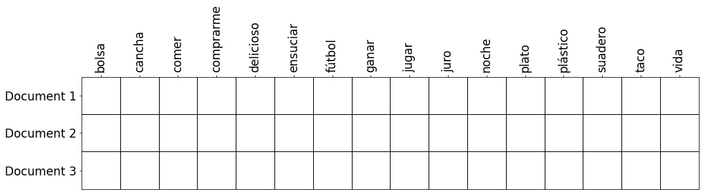
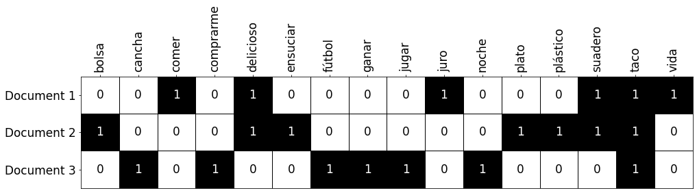
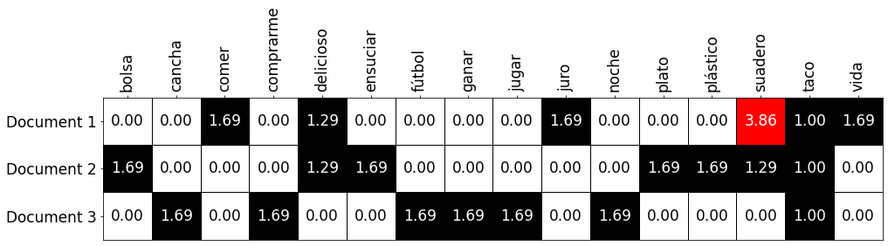

De texto a vectores (parte 1)
Tener nuestro texto convertido en tokens es un paso importante en el uso de texto para aplicaciones de machine learning, existe una transformación que debemos realizar para facilitarle la tarea a nuestros modelos. Esta transformación es conocida como vectorización.
En el post pasado nos quedamos con nuestro texto ya tokenizado, sin embargo los modelos de machine learning operan con valores numéricos organizados en arreglos llamados vectores, y hasta el momento nuestros tokens son solo secuencias de caracteres. Nuestra tarea, y de lo que les voy a hablar en el siguiente post, es convertir esta secuencias a vectores.
Un poco de nomenclatura
Cuando se habla de texto en el contexto de la ciencia de datos hay algunas palabras que debemos entender ya que son comúnmente usadas:
- Token, conjunto de caracteres que representa la mínima unidad en el análisis de texto.
- Documento, la representación escrita de una idea, concepto o diálogo, un documento está compuesto por varios tokens. Como ejemplos de documentos podemos tener un tweet, un diálogo en una película o un paper de una publicación científica.
- Corpus, todo el conjunto de documentos sobre el que estamos realizando el análisis.
- Vocabulario, el conjunto de tokens únicos que obtenemos como resultado al tokenizar nuestro corpus completo.
Por ejemplo, debajo tenemos tres documentos, que en conjunto forman nuestro corpus.
Fui a comer tacos de suadero. Juro que es el suadero más delicioso de mi vida. #suadero
Taco de delicioso suadero con bolsa de plástico para que no ensucie el plato.
Tengo ganas de comprarme unos tacos de fútbol, ir a la cancha y jugar hasta la noche
Luego, una vez tokenizado con la función que desarrollamos en el post anterior, nos queda el siguiente vocabulario: bolsa, cancha, comer, comprarme, delicioso, ensuciar, fútbol, ganar, jugar, juro, noche, plato, plástico, suadero, taco y vida.
Como referencia, aquí está la función tokenizadora que llamamos tokenize_phrase:
def tokenize_phrase(phrase):
parsed_phrase = nlp(phrase)
for token in parsed_phrase:
if token.is_punct or token.is_stop or token.text.lower() in spanish_stopwords:
continue
yield token.lemma_.lower()
SciKit-Learn: Si no estás familiarizado con la interfaz de SciKit-Learn te invito a ver mi video sobre el tema. En resumen, SciKit-Learn tiene unas clases que se conocen como transformers, estos, como el nombre nos indica, son usados para transformar datos entre dos dominios. Los transformadores que vamos a usar poseen dos métodos que estamos usando:
fit, que nos ayuda preparar nuestro vectorizador,transformque nos ayuda a convertir nuestros datos a vectores.
Bolsa de palabras (Bag of words)
Una de las primeras ideas que se nos puede venir a la mente es la de generar una pequeña tabla, en donde cada documento es un renglón y cada token es una columna:

CountVectorizeryanalyzer: Al especificar el argumentoanalyzery asignarlo a nuestra función para tokenizar (tokenize_phrase) le estamos indicando a nuestro transformador que cuando sea el momento de tokenizar nuestros documentos, use esa función en lugar del tokenizador por default que viene ensklearn.
Vectores de frecuencia
Para rellenar la tabla anterior tenemos varias opciones, por ejemplo, podríamos simplemente la cantidad de veces que un determinado token aparece en cada uno de los documentos:
Como, en nuestro caso, la palabra “suadero” aparece tres veces en el primer documento.
Para lograr esto, vamos a hacer uso de SciKit-Learn, que si bien no es un framework dedicado a trabajar con texto, tiene bastantes utilidades que nos permiten hacerlo de manera sencilla y reproducible.
from sklearn.feature_extraction.text import CountVectorizer
frequency_vectorizer = CountVectorizer(analyzer=tokenize_phrase)
frequency_vectorizer.fit(corpus)
frequency_vectors = frequency_vectorizer.transform(corpus)
One-hot-encoding (Bag of words)
Otra opción que tenemos, si es que solamente queremos saber si una palabra existe en un documento o no, es la de usar la codificación one-hot, que simplemente consiste en colocar verdadero o falso (1 o 0) dependiendo de si la palabra existe o no:

Como, en nuestro caso, a pesar de que la palabra “suadero” aparece tres veces en el primer documento, solamente hay un uno en la columna correspondiente. Para lograr esto con Python, el siguiente código es útil:
from sklearn.feature_extraction.text import CountVectorizer
one_hot_vectorizer = CountVectorizer(analyzer=tokenize_phrase, binary=True)
one_hot_vectorizer.fit(corpus)
one_hot_vectors = one_hot_vectorizer.transform(corpus)
CountVectorizerybinary: A pesar de usar la misma claseCountVectorizer, el especificar el argumentobinary = Truele indica a nuestro transformer que simplemente queremos saber si un token existe en un documento, no cuántas veces aparece.
TF-IDF
Tanto el vector de frecuencias como el binario tratan cada documento de manera individual. Lo cual es bueno hasta cierto punto, sin embargo, existe una transformación que toma en cuenta la influencia de todo el corpus en cada documento.
La idea detrás del famoso TF-IDF (Term Frequency – Inverse Document Frequency), o por su nombre en español: frecuencia de término – frecuencia inversa de documento, El valor de cada token aumenta proporcionalmente al número de veces que una palabra aparece en el documento, pero es compensada por la frecuencia de la palabra en la colección de documentos, lo que permite manejar el hecho de que algunas palabras son generalmente más comunes que otras.
Detalles matemáticos…
Existen diversas maneras de calcular este número la wikipedia lista varias, pero esta es una de las más comunes:
Partiendo de que
- \(t\) es el token para el cual estamos calculando,
- \(d\) es el documento de interés y
- \(D\) es nuestro corpus
Obtenemos el valor de acuerdo a la siguiente formula
\[tfidf(t, d, D) = \color{blue}{tf(t, d)} \times \color{red}{idf(t, D)}\]-
\(\color{blue}{tf(t, d) = f_{t,d}}\) es la cantidad de veces que el token \(t\) aparece en el documento \(d\).
-
\(\color{red}{idf(t, D) = \ln{\frac{\vert D \vert + 1}{\vert\{d \in D: t \in d\}\vert + 1} + 1}}\) en donde \(\vert D \vert\) es la cantidad de documentos en nuestro corpus y \(\vert \{d \in D: t \in d\} \vert\) es la cantidad de documentos en la que aparece el token \(t\). Los \(+ 1\) que se encuentran ahí son conocidos como “suavizado” que nos ayudan a evitar divisiones entre \(0\).
Toma por ejemplo, el token suadero en el primer documento (denotado como \(documentos_1\)):
\[tfidf(“suadero”, documentos_1, corpus) = \color{blue}{tf(“suadero”, documentos_1)} \times \color{red}{idf(“suadero”, corpus)}\] \[tfidf(“suadero”, documentos_1, corpus) = \color{blue}{3} \times \color{red}{\ln{\frac{3 + 1}{2 + 1} + 1}}\] \[tfidf(“suadero”, documentos_1, corpus) = \color{blue}{3} \times \color{red}{\ln{\frac{4}{3}+1}}\] \[tfidf(“suadero”, documentos_1, corpus) = \color{blue}{3} \times \color{red}{\ln{2.333}}\] \[tfidf(“suadero”, documentos_1, corpus) = 3.8630\]Como se puede observar en la siguiente tabla:

Usualmente los algoritmos lineares de machine learning otorgan mejores resultados cuando nuestras variables de entrada están normalizadas, así que se recomienda que nosotros hagamos lo mismo.
Para nuestra suerte, dentro de sklearn también existe un transformer que nos permite convertir nuestros vectores a TF-IDF (incluyendo la parta de la normalización):
from sklearn.feature_extraction.text import TfidfVectorizer
tfidf_vectorizer = TfidfVectorizer(analyzer=tokenize_phrase)
tfidf_vectorizer.fit(corpus)
tfidf_vectors = tfidf_vectorizer.transform(corpus)
Que nos dará como resultado una matriz más o menos así:
Sobre las representaciones vectoriales…
Representaciones dispersas
Si de algo nos dimos cuenta con las matrices anteriores, es que en muchas ocasiones, tenemos más 0 (valores en blanco) que valores reales. En otras palabras, nuestros documentos-vectores son dispersos, o en ingles sparse vectors. Esto podría llegar a ser un problema cuando tenemos un vocabulario de tamaño considerable.
No reflejan el orden de los términos
Otra cosa a considerar es que con solo ver la representación vectorizada de determinado documento, no podemos reconstruir el documento original, de entrada por todo el proceso de tokenización, pero también porque ninguna de las técnicas que vimos, preserva el orden original de los tokens en el documento.
Existen todavía más opciones
Si bien estas representaciones son buenas u útiles, hay casos en los que necesitamos obtener más detalle de nuestros documentos, para esos casos podemos usar técnicas como Word2vec o Doc2vec, de las cuales espero escribir en un post futuro.
Guarda tus vectorizadores
Sin importar qué método de transformación usaste, siempre debes usar el mismo para transformaciones subsecuentes. Por ejemplo, si usaste fit con un transformador para los datos de entrenamiento de un algoritmo de clasificación, debes usar el mismo transformador (ya entrenado) para obtener los vectores al momento de realizar predicciones en nuevos datos.
Mientras tanto, te invito a que me en Twitter en @io_exception, por allá podemos conversar sobre el tema.
Subscríbete a 🌮 tacos de datos | Aprende visualización de datos en español.
Recibe las mejores publicaciones directamente a tu caja de entrada